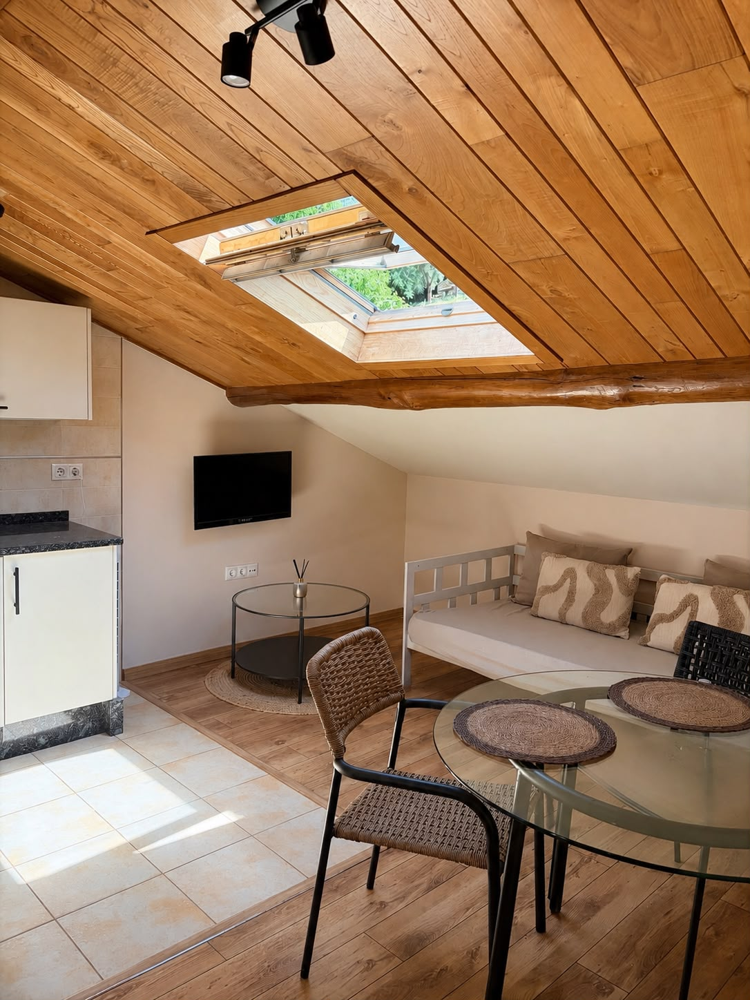

Alojamiento rural
Ameiro
“Un pequeño ático con mucho HOGAR.”
En la parte más alta de la casa, Ameiro es un apartamento abuhardillado donde la madera, las vigas vistas y la luz natural crean un ambiente especialmente acogedor.
Dormitorio independiente, cocina, comedor y zona de estar se reparten en un espacio cálido y tranquilo, pensado para descansar y disfrutar sin prisas de unos días en Abres.